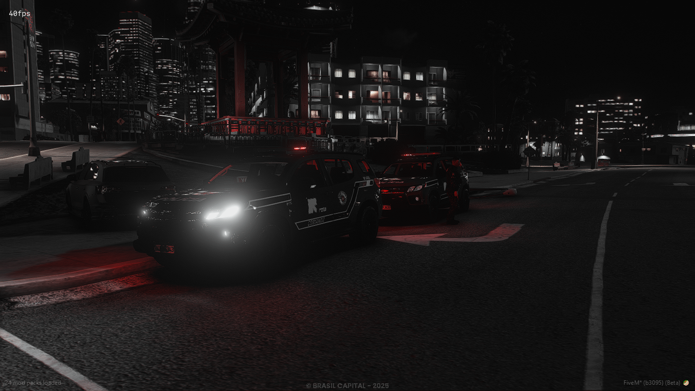

Unidade especializada da Polícia Militar do Estado de São Paulo, reconhecida por sua atuação em ocorrências de alta complexidade.
Patrulhamento tático, combate ao crime organizado e ações de resposta rápida em situações críticas.
Operações Realizadas
Prisões Efetuadas
Patrulhamentos

Para informações institucionais, utilize os canais oficiais da Polícia Militar do Estado de São Paulo.